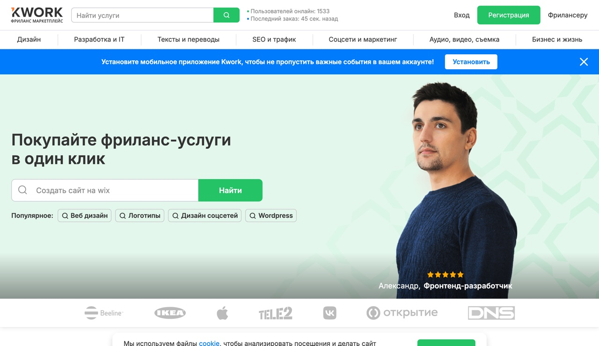

Схема · Первые заказы
Где брать первые заказы, когда у тебя ноль опыта и портфолио
Воронка из трёх каналов, где сидят заказчики, шаблон первого сообщения и честные цифры без сказок про «сотку за неделю».

Воронка из трёх каналов, где сидят заказчики, шаблон первого сообщения и честные цифры без сказок про «сотку за неделю».
Знаю, о чём ты думаешь. «Кому я нужен без опыта, портфолио пустое, а на биржах и так толпа».
Давай честно. Первые заказы берут скоростью, дешёвой ценой на старте и одним готовым демо, которое ты покажешь ещё до того, как клиент спросит «а что ты умеешь». Ниже разложил рабочую воронку из трёх каналов и как закрыть дыру с портфолио за один вечер.
Сначала выбери одну нишу, которую реально закроешь за вечер: чат-бот с ответами на частые вопросы, лендинг на Tilda, генерация карточек для WB и Ozon или пакет текстов и промптов. Новичку хватит одной, не распыляйся на всё сразу. Спрос реальный: на биржах запросов про настройку ИИ и ботов за последние пару лет стало кратно больше.
Бери реальный бизнес у дома: кофейня, барбершоп, автосервис, стоматология. Собери для него бота, который отвечает на четыре вопроса: цена, адрес, часы работы, как записаться. Плюс мини-лендинг. Запиши экран, как бот работает, сделай 3-4 скрина. Вот и вся витрина.
Если приврёшь и выдашь за оплаченный кейс, первый же вопрос клиента вскроет ложь. Учебное демо под их сферу продаёт и без вранья.

Одно конкретное предложение. Демо прямо в первом сообщении. Бесплатный первый шаг снимает страх. Вопрос в конце вытягивает ответ.
Первые 2-3 заказа берёшь дёшево, за отзыв. Это норма старта. После 3-5 отзывов поднимаешь цены и добавляешь абонентку за поддержку, она и даёт стабильный фон.
| Услуга | Цена |
|---|---|
| Первые 2-3 заказа за отзыв | 1000-2000 ₽ |
| Простой бот с ответами | от 5000 ₽ |
| Настройка ассистента | 15-40к |
| Лендинг и пакеты текстов | 3-10к |
| Поддержка бота, абонентка | 5-25к/мес с клиента |
| Автоматизация на Make или n8n | 30-80к |
Реальные первые клиенты приходят за 2-3 месяца системного поиска, не за неделю. Первый вечер уйдёт целиком на сборку демо. Бесплатные тарифы упрутся в лимиты: боевому боту клиента нужен платный Salebot от 990 рублей в месяц, Tilda под свой домен тоже платная. Это не повод стопориться, это то, что заложишь в счёт.

Каждый закрытый заказ превращай в кейс, скрин плюс результат, и клади в портфолио на Kwork и в свой телеграм. Через месяц-два активности отзывы начинают приводить клиентов сами.
Внутри живой список чатов с заказами и все шаблоны. А сегодня собери одно демо и завтра отправь первые 5 откликов.
Забрать бесплатный тест-драйв